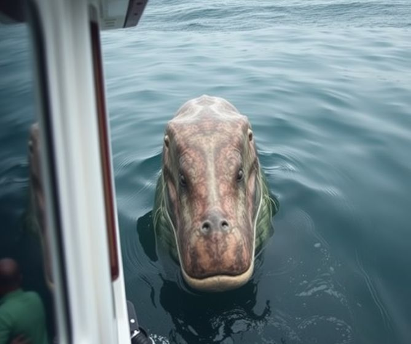

The Dauntless bobbed gently in Everglades twilight. Mangroves whispered overhead. Fireflies blinked like old LED ports. Somewhere in the dark, something large splashed… then crunched.
Spyder leaned on the rail, mug in hand, gaze flat. "That's the fourth one today."
Vanessa joined him, watching the disturbance in the water. Out where the reeds parted, Champ (or as the gators now called her whispers-in-water) was dining again. Ancient jaws. Modern menu.
Spyder: "I thought she was laying low. Not snacking like we’re running a cryptid food truck."
Vanessa closed her eyes, connecting. Then, a smile: “She says… they’re a delicacy.”
Wayne, surfacing with a grease-streaked wrench: “A delicacy?! We’re supposed to catch those. Skin 'em. Sell ‘em. Not feed them to a prehistoric poodle with God-tier sonar.”
Champ surfaced. Locked eyes with Spyder. Smiled—maybe.
Vanessa: "She’s not sorry." Wayne: "She’s never sorry."
Spyder, shaking his head but grinning: “Our margins sure know how gourmet she is.”
Wayne: "New plan. ‘Champ Watch’ eco-tours. Let the tourists pay for the gator shortage she’s causing."
Spyder’s Log:
The plan: Catch gators. Sell skins. Retire early (or just upgrade shower filters).
Reality: Champ ate the profits—whole. Four gators, day one.
Lesson learned: Never bet against a sea monster’s appetite... or the universe’s sense of humor.
Wayne’s Final Note:
Watched her eat three gators in as many minutes.
Faster than Spyder loses a shoe.
Next plan: Sell tickets to watch her chew them instead. Minimal skinning required.
Vanessa’s Closing Word:
We crossed a continent to lose money to a cryptid—and I kind of love it.
When Champ surfaced with that last gator, she looked proud—
Like we’d brought takeout.
P.S. If a legend wants your gators, let her have them.
They’re apparently a delicacy… in at least seven dimensions.